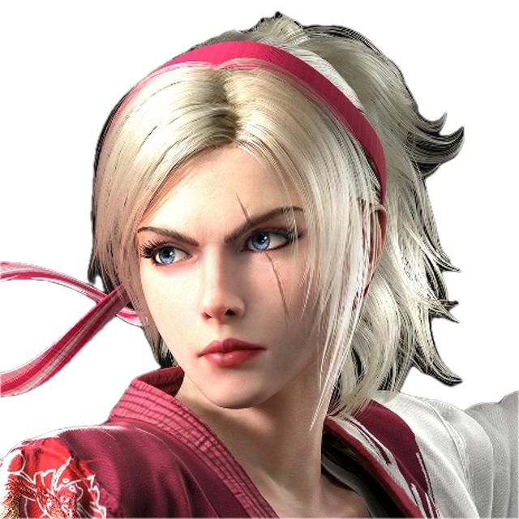
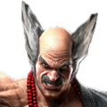

P19Valmentajaprofiili
TUMEFIN
Lidia · TumeFIN115

Lidia/Raven tekken 8 mainit ja niiden lisänä tulee Fahkumram, Heihachi(vanha main) ja hieman Armor King.
Tekken 7 alusta eteenpäin aloin pelaamaan enemmän tosissaan ja Tekken 8 menin vielä enemmän next level:lle ja itse tekken pelejä olen pelannut Tekken 3 asti.
Whiff punishs ja sidestep punish ajoittaminen, puolustan tiukasti, käytän huomaamiani vastustaja heikkouksia häntä vastaan ja en annan armoa tekniikkojen käyttämisessä ja hyödyntämisessä.
Etsin parannettavaa puolustuksessa ja hyökkäyksessä, sekä opastan parhaani mukaan pelattavan hahmon kanssa vaikka kyseessä ei oliskaan mun main hahmo
Discord ja steam kautta mut saa suht helposti kiinni
Olen hahmo lojaali pelaaja, enkä pelaa hahmoa metan vuoksi vaan siksi että pidän hahmosta kaikinpuolin. Autan mielelläni muita pelaajia kehittymisessä parhaani mukaan ja oon chilli tyyppi kaikinpuolin joten älä pelkää tulee juttelee tai ottaa matsia mun kanssa.
Ota yhteyttä Discordissa
TUMEFIN&TumeFIN115